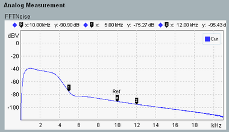

For an FFT noise measurement, an audio signal consisting of several 1000 sine wave test tones is generated, transmitted and analyzed. All test tones have the same level and equidistant frequencies covering the entire spectrum up to 21 kHz. The crest factor of the noise signal is low.

The result diagram displays the measured audio level vs. the frequency.
The measurement uses a fast Fourier transform (FFT) compatible to the generated noise signal. That means, the used sampling rate and the FFT size yield a frequency resolution matching the frequency spacing of the generated test tones.
Example: With a sampling rate of 48 kHz and an FFT size of 4096, the resulting frequency resolution equals 48000 / 4096 = 11.71875 Hz. So this frequency spacing would be used for the generated test signal.
This combination of matching noise signal and FFT allows you to analyze the frequency response of a DUT in a single measurement.